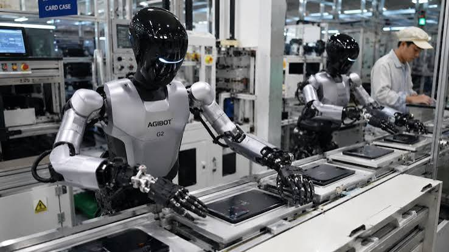
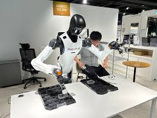
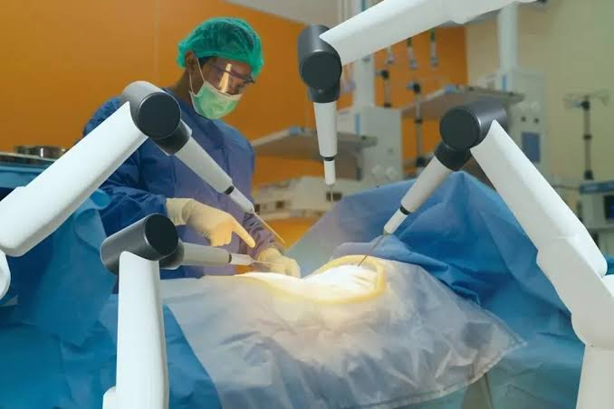
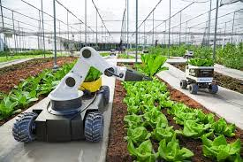
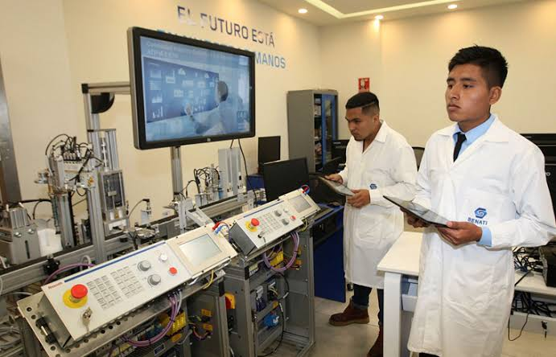
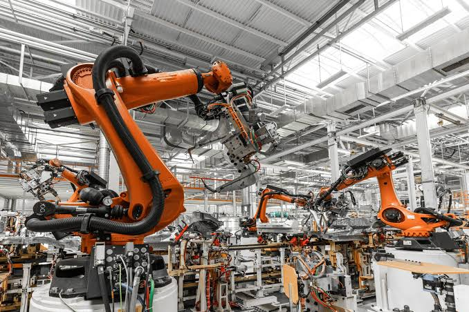
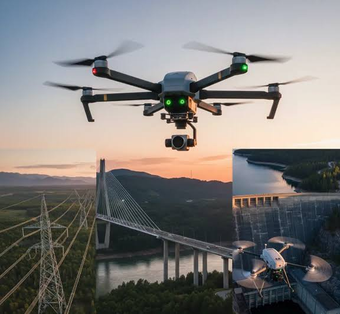
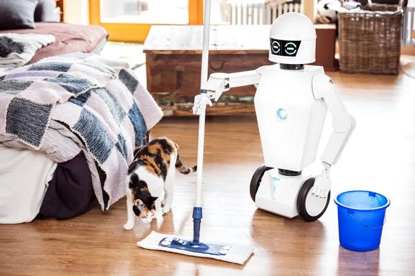
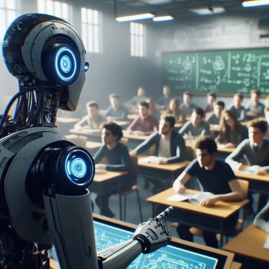

Robots humanoides llegan a las fábricas
Diversas compañías comienzan a integrar robots inteligentes para realizar tareas repetitivas con mayor precisión.
Leer noticiaPortal de Noticias sobre Inteligencia Artificial

La nueva generación de Inteligencia Artificial Física representa uno de los mayores avances tecnológicos de los últimos años. Grandes empresas han desarrollado modelos capaces de controlar robots humanoides, vehículos autónomos y maquinaria inteligente mediante cámaras, sensores y algoritmos de aprendizaje profundo.
A diferencia de la IA tradicional, esta tecnología no solo interpreta texto e imágenes, sino que también comprende espacios físicos, calcula movimientos y toma decisiones en tiempo real para interactuar con personas y objetos.
Leer más
Diversas compañías comienzan a integrar robots inteligentes para realizar tareas repetitivas con mayor precisión.
Leer noticia
Robots colaborativos ayudan al personal médico transportando medicamentos y materiales.
Leer noticiaLos nuevos modelos reconocen peatones y obstáculos utilizando IA Física en tiempo real.
Leer noticia
Equipos autónomos detectan enfermedades y optimizan el uso del agua.
Leer noticiaEl sector tecnológico apuesta por nuevas plataformas para robots autónomos.
Leer noticia
Estudiantes desarrollan aplicaciones para robots inteligentes utilizando IA Física.
Leer noticia
Gracias a la IA Física, los robots pueden adaptarse a diferentes procesos de manufactura sin necesidad de ser programados nuevamente.

Empresas utilizan drones con IA Física para revisar puentes, edificios y líneas eléctricas con mayor precisión.

Los nuevos asistentes inteligentes pueden reconocer objetos, ordenar habitaciones y colaborar con las personas.

Universidades incorporan laboratorios donde los estudiantes desarrollan soluciones para robots autónomos.